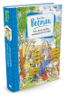

Повести про папу, маму, бабушку, восемь детей и грузовик уже давно полюбились нашим читателям. С 1962 года, когда первая книга из этого цикла была издана в нашей стране, весёлые и поучительные истории о многодетной семье, в которой, несмотря на трудности, никогда не унывают, постоянно переиздаются. Их с удовольствием читают не только дети, но и взрослые - ведь в них без нравоучений и назидательности, с юмором преподносятся уроки жизни. В эту книгу входят две повести: "Папа, мама, восемь детей и грузовик" и "Папа, мама, бабушка и восемь детей в лесу".